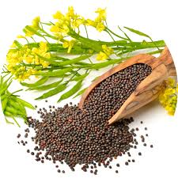

MUSTURD
Introduction

White mustard (Sinapis alba) grows wild in North Africa, West Asia, and Mediterranean Europe, and has spread farther by long cultivation; brown mustard (Brassica juncea), originally from the foothills of the Himalayas, is grown commercially in India, Canada, the United Kingdom, Denmark, Bangladesh and the United States; black mustard (Brassica nigra) is grown in Argentina, Chile, the US, and some European countries. Canada and Nepal are the world's major producers of mustard seed, between them accounting for around 57% of world production in 2010. White mustard is commonly used as a cover crop in Europe (between UK and Ukraine). Many varieties exist, e.g., in Germany and the Netherlands, mainly differing in lateness of flowering and resistance against white beet-cyst nematode (Heterodera schachtii). Farmers prefer late-flowering varieties, which do not produce seeds; they may become weeds in the subsequent year. Early vigor is important to cover the soil quickly and suppress weeds and protect the soil against erosion. In rotations with sugar beets, suppression of the white beet-cyst nematode is an important trait. Resistant white mustard varieties reduce nematode populations by 70–90%.[citation needed]
Recent research has studied varieties of mustards with high oil contents for use in the production of biodiesel, a renewable liquid fuel similar to diesel fuel. The biodiesel made from mustard oil has good flow properties and cetane ratings. The leftover meal after pressing out the oil has also been found to be an effective pesticide.
Nutrition
Mustard seeds, whether yellow, brown, or black, are tiny powerhouses of nutrition. Here's an overview of the nutrition of mustard seeds:
- Macronutrients:
- Protein: Mustard seeds are a good source of plant-based protein, providing about 6-8 grams of protein per ounce (28 grams) of seeds. Protein is essential for muscle building, repair, and overall body function.
- Fats: Mustard seeds are high in healthy fats, particularly monounsaturated and polyunsaturated fats. They also contain omega-3 fatty acids, which are beneficial for heart health and inflammation reduction.
- Carbohydrates: Mustard seeds are low in carbohydrates, making them suitable for low-carb and ketogenic diets. They contribute minimal amounts of carbohydrates to the diet.
- Vitamins:
- Vitamin E: Mustard seeds contain vitamin E, an antioxidant that protects cells from oxidative damage and supports immune function.
- Vitamin K: They are a good source of vitamin K, which is important for blood clotting and bone health.
- B Vitamins: Mustard seeds provide various B vitamins, including thiamine (B1), riboflavin (B2), niacin (B3), pantothenic acid (B5), pyridoxine (B6), and folate (B9). These vitamins play key roles in energy metabolism, nervous system function, and DNA synthesis.
- Minerals:
- Calcium: Mustard seeds contain calcium, which is essential for bone health, muscle function, and nerve signaling.
- Magnesium: They are a good source of magnesium, which supports muscle and nerve function, blood sugar regulation, and bone health.
- Phosphorus: Mustard seeds provide phosphorus, important for bone health, energy metabolism, and cell structure.
- Iron: They contain iron, which is necessary for oxygen transport in the blood and overall energy production.
- Antioxidants:
- Phenolic Compounds: Mustard seeds contain phenolic compounds such as sinapic acid, which have antioxidant properties. Antioxidants help neutralize free radicals in the body and protect against oxidative stress and inflammation.
Dietary Fiber:
- Fiber Content: Mustard seeds are a good source of dietary fiber, including both soluble and insoluble fiber. Fiber promotes digestive health, regulates cholesterol levels, and contributes to satiety and weight management.
Caloric Content:
- Calories: Mustard seeds are calorie-dense due to their fat and protein content. One ounce (28 grams) of mustard seeds provides approximately 150-170 calories, depending on the type and variety.
Including mustard seeds in your diet, whether as whole seeds, ground mustard, or as part of condiments like mustard sauce, can add flavor, texture, and nutritional benefits to your meals. They are commonly used in cooking, baking, pickling, and as a seasoning in various cuisines worldwide.
Soil And Nutrients

To grow mustard successfully, you'll want to ensure that your soil is well-prepared and provides the necessary nutrients for plant growth. Here are the soil requirements and nutrient considerations for growing mustard
- Soil Type: Mustard plants prefer well-drained soil that is rich in organic matter. Sandy loam or loamy soils with good water retention and aeration are ideal for mustard cultivation. Avoid waterlogged or compacted soils.
- Soil pH: Mustard plants grow best in slightly acidic to neutral soil with a pH range of 6.0 to 7.5. Conduct a soil test to determine the pH of your soil and make any necessary adjustments using lime to raise pH or elemental sulfur to lower pH.
- Organic Matter: Incorporate organic matter into the soil before planting mustard seeds. Compost, well-rotted manure, or organic mulches help improve soil fertility, structure, moisture retention, and microbial activity.
- Nutrient Requirements: Mustard plants have moderate nutrient requirements but benefit from a balanced supply of essential nutrients. The key nutrients for mustard cultivation are nitrogen (N), phosphorus (P), and potassium (K), often referred to as NPK.
- Nitrogen (N): Mustard plants require nitrogen for vegetative growth, leaf development, and overall plant vigor. Incorporate nitrogen-rich fertilizers, such as composted manure or nitrogen-based fertilizers, into the soil before planting or as side dressings during the growing season.
- Phosphorus (P) and Potassium (K): Phosphorus is crucial for root development and flowering, while potassium supports overall plant health and disease resistance. Use a balanced fertilizer with an NPK ratio suited for flowering plants (e.g., 10-10-10) at planting time or apply phosphorus and potassium separately based on soil test recommendations.
- Micronutrients: Mustard plants may benefit from micronutrients such as calcium, magnesium, sulfur, iron, zinc, and manganese. These micronutrients contribute to plant growth, nutrient uptake, and enzyme activities. Consider using micronutrient-rich fertilizers or soil amendments if deficiencies are identified through soil testing or plant symptoms.
- Fertilizer Application: Apply fertilizers according to soil test results, plant nutrient needs, and growth stages. Incorporate fertilizers into the soil before planting or apply them as side dressings during the growing season. Follow package instructions for application rates, timing, and placement methods.
- Watering: Provide adequate and consistent watering to mustard plants, especially during the germination, establishment, and flowering stages. Keep the soil evenly moist but not waterlogged to promote healthy root development and plant growth.
- Mulching: Apply a layer of organic mulch, such as straw or shredded leaves, around mustard plants to conserve soil moisture, suppress weeds, and maintain a more stable soil temperature.
- Soil Drainage: Ensure that the planting site has good drainage to prevent waterlogging, which can lead to root rot and nutrient leaching. Raised beds or improving soil drainage through organic matter incorporation can help create optimal growing conditions for mustard plants.
By meeting these soil and nutrient requirements, you can promote healthy growth, vigorous flowering, and a good yield of mustard plants. Regular soil testing, nutrient management, and proper watering practices contribute to successful mustard cultivation.
HoW to Plant Mustard
Planting mustard is relatively straightforward and can be done in a few simple steps. Here's a guide on how to plant mustard:
Choose the Right Variety: Select a mustard variety based on your preferences and intended use. Mustard varieties can include white/yellow mustard (Sinapis alba), brown mustard (Brassica juncea), and black mustard (Brassica nigra). Consider factors such as flavor, spice level, and growth habits.
- Select a Planting Location: Mustard grows best in full sun but can tolerate partial shade. Choose a well-drained planting location with fertile soil. Ensure that the soil has a pH between 6.0 and 7.5, which is ideal for mustard cultivation.
- Prepare the Soil:
- Clear the planting area of weeds, rocks, and debris.
- Work the soil to a depth of about 6-8 inches using a garden fork or tiller.
- Incorporate organic matter such as compost, aged manure, or peat moss to improve soil fertility, structure, and moisture retention.
- Sow the Seeds:
- Plant mustard seeds directly into the prepared soil. Space the seeds according to the recommended spacing for the specific mustard variety you are planting.
- Sow the seeds at a depth of about 1/4 to 1/2 inch and cover lightly with soil. Firm the soil gently to ensure good seed-to-soil contact.
- Watering: Water the planted area immediately after sowing to help the seeds germinate. Keep the soil evenly moist but not waterlogged throughout the growing season. Water deeply and regularly, especially during dry periods.
- Thin Seedlings (if necessary): Once the mustard seeds germinate and seedlings emerge, thin them to the recommended spacing for optimal growth. Crowded seedlings can compete for nutrients and may not develop properly.
- Fertilization: Mustard plants have moderate nutrient requirements. Incorporate a balanced fertilizer with an NPK ratio suited for vegetables (e.g., 10-10-10) into the soil before planting or apply as directed based on soil test recommendations. Avoid over-fertilizing, which can lead to excessive foliage growth.
- Mulching: Apply a layer of organic mulch, such as straw or shredded leaves, around mustard plants to conserve soil moisture, suppress weeds, and maintain a more stable soil temperature.
- Pest and Disease Management: Monitor mustard plants for pests such as aphids, flea beetles, and caterpillars. Use organic pest control methods if needed. Mustard plants are generally resistant to many diseases but may encounter issues like downy mildew or white rust in humid conditions.
- Harvesting: Harvest mustard leaves for fresh use as baby greens or mature leaves for cooking when they reach the desired size. Mustard seeds can be harvested when the pods turn brown and dry on the plant. Cut the pods and allow them to dry further before threshing to extract the seeds.
By following these planting guidelines and providing proper care, you can successfully grow mustard in your garden. Adjustments may be needed based on your specific climate, soil conditions, and local agricultural recommendations.
Fertilizing
Fertilizing mustard plants is essential to ensure healthy growth and optimal yield. Here are some guidelines for fertilizing mustard:
- Soil Testing: Before applying fertilizers, conduct a soil test to determine the nutrient levels in your soil. This will help you understand which nutrients are deficient and how much fertilizer is needed.
- Nutrient Requirements: Mustard plants have moderate nutrient requirements, primarily focusing on nitrogen (N), phosphorus (P), and potassium (K), often referred to as NPK.
- Nitrogen (N): Mustard plants benefit from nitrogen for leafy growth and overall plant vigor. Apply nitrogen-rich fertilizers, such as composted manure, blood meal, or nitrogen-based fertilizers, according to soil test recommendations or package instructions.
- Phosphorus (P) and Potassium (K): Phosphorus supports root development and flowering, while potassium promotes overall plant health and disease resistance. Use a balanced fertilizer with an NPK ratio suited for vegetables (e.g., 10-10-10) or apply phosphorus and potassium separately based on soil test results.
- Fertilizer Application Timing
- At Planting: Incorporate fertilizers into the soil before planting mustard seeds. Follow package instructions for application rates based on soil test recommendations.
- During Growth: Monitor mustard plants throughout the growing season and apply additional fertilizers as needed. Side-dress nitrogen-based fertilizers or apply foliar fertilizers during the vegetative growth stage for continued nutrient uptake.
- Organic Matter: Incorporating organic matter, such as compost, aged manure, or cover crop residues, into the soil before planting can supplement nutrient levels and improve soil fertility over time. Organic amendments contribute to long-term soil health and nutrient availability.
- Micronutrients: Mustard plants may benefit from micronutrients such as calcium, magnesium, sulfur, iron, zinc, and manganese. Consider using micronutrient-rich fertilizers or soil amendments if deficiencies are identified through soil testing or plant symptoms.
- Watering: Proper watering practices complement fertilization by ensuring that nutrients are available to the plants. Maintain consistent soil moisture levels, especially during periods of active growth, to support nutrient uptake and plant health.
- Mulching: Apply a layer of organic mulch, such as straw or shredded leaves, around mustard plants to conserve soil moisture, suppress weeds, and maintain a more stable soil temperature. Mulching also helps reduce nutrient leaching from heavy rainfall or irrigation.
- Monitor Plant Health: Regularly monitor mustard plants for signs of nutrient deficiencies or excesses, such as yellowing leaves, stunted growth, or leaf discoloration. Adjust fertilization practices based on plant response and soil nutrient levels to promote healthy growth and optimal yield.
By following these fertilizing guidelines and providing proper care, you can support robust growth and maximize the productivity of your mustard plants. Tailor fertilization practices based on specific soil conditions, plant needs, and local agricultural recommendations for best results.